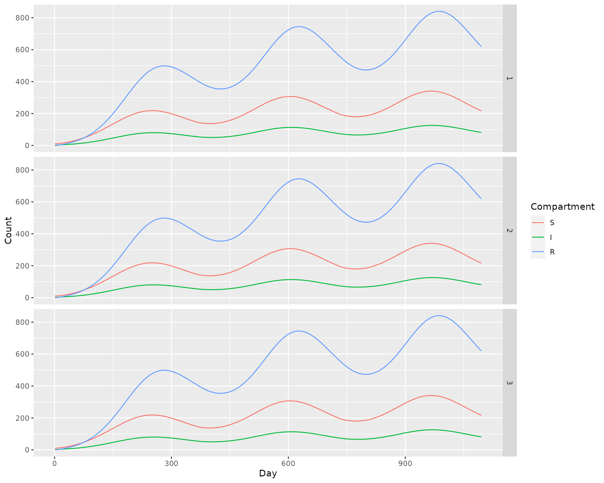
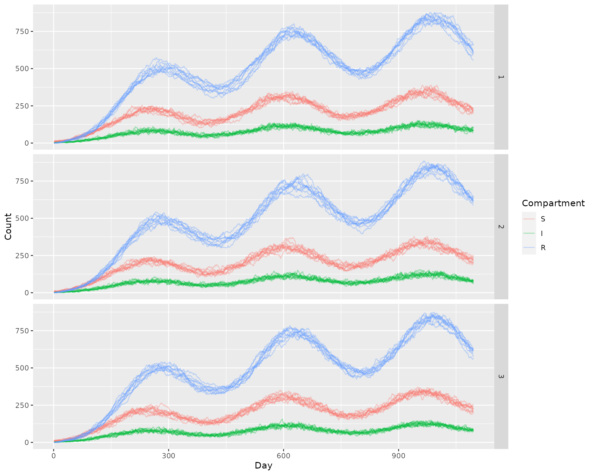

The bird component needs to model pathogen dynamics in host bird species. We demonstrate here the use of the basic SIRS (Susceptible-Infectious-Recovered-Susceptible) model of adult bird dynamics that fulfills the required bird component interface. Using the bird component necessarily means we need to specify a model for the fledgling (immature) bird component, for which we use a simple trace-derived (forced) model.
The SIRS model implemented here is a simple ODE (Ordinary Differential Equation) style model adapted for a discrete time step, and comes in both deterministic and stochastic versions. To sample/compute state updates we use an Euler scheme similar to the 3rd method (Binomial increments with exponential probability) from this document, which is a standard method to discretize continuous time stochastic dynamics.
The model requires the following parameters:
-
fledge_disperse: a dispersal matrix describing how fledglings disperse from their natal nests upon reachind adulthood -
theta: a “time spent” matrix for birds, giving how they distribute their time across a home range -
mu: daily mortality rate (may be time-varying) -
wf: vector of biting weights for each patch/place -
gamma: inverse of infectious duration (recovery rate) -
r: inverse of immune duration (rate of loss of immunity)
The state of the model is stored in a p by 3 matrix where the columns correspond to the S, I, and R states. New fledglings are always added to the S state.
Deterministic model
The deterministic model has the following form:
\[\begin{equation} S_{t+1} = e^{-(\mu_{t} + h_{t})} S_{t} + (1 - e^{-(\mu_{t} + \gamma)}) \left( \frac{r}{\mu_{t} + r} \right) R_{t} + (\lambda_{t} \cdot \psi) \\ I_{t+1} = e^{-(\mu_{t} + \gamma)} E_{t} + (1 - e^{-(\mu_{t} + h_{t})}) \left( \frac{h_{t}}{\mu_{t} + h_{t}} \right) S_{t} \\ R_{t+1} = e^{-(\mu_{t} + r)} R_{t} + (1 - e^{-(\mu_{t} + \gamma)}) \left( \frac{\gamma}{\mu_{t} + \gamma} \right) I_{t} \\ \end{equation}\]
where \(\psi\) is the dispersal matrix for new fledglings, and \(\lambda_{t}\) is the number of new fledglings reaching adulthood on that day, which is calculated from the fledgling component.
Stochastic model
The stochastic model is largely the same as the deterministic one, except all flows between compartments are sampled from the appropriate binomial distribution and the model’s state space is integer vectors.
Example
We’ll run a simple example here, for 3 years. We need to specify \(\lambda\), which we’ll choose to be of length 365, giving the number of fledgling birds reaching adulthood per day, per patch, each day of the year. It will peak in the middle of the year, at 10 birds.
We will use a very mild sinusoidal seasonal signal for mortality, where the average over the year is mean_mu. Please note these are not particularly realistic parameter values for birds, but merely intended to showcase functionality.
tmax <- 365 * 3
p <- 3
gamma <- 1/7
r <- 1/60
lambda <- dnorm(x = 1:365, mean = 180, sd = 90)
lambda <- lambda * (5/max(lambda))
lambda <- t(replicate(p, lambda))
seasonal_signal <- sin((1:365)/365*2*pi + 90) + 1
mean_mu <- 1/365
mu <- seasonal_signal * mean_mu
mu <- pmax(mu, sqrt(.Machine$double.eps)) # just to avoid numerical issues
fledge_disperse <- matrix(
c(
0.9, 0.05, 0.05,
0.05, 0.9, 0.05,
0.05, 0.05, 0.9
), nrow = 3, ncol = 3,
byrow = TRUE
)
theta <- fledge_disperse
par(mar = c(5,5,2,5))
plot(lambda[1, ], type = "l", col = "red", xlab = "Day", ylab = "Fledgling births (red)")
par(new = TRUE)
plot(mu, type = "l", axes = F, xlab = NA, ylab = NA, col = "blue")
axis(side = 4)
mtext(side = 4, line = 3, 'Mortality rate (blue)')Deterministic simulation
We set the daily force of infection such that on average \(5\%\) of birds would become infected each day. Let’s first do a deterministic simulation. We use setup_birds_SIRS to setup the SIRS birds model for the bird component, and setup_fledge_trace to set up the fledgling (immature) component as a simple trace (forced) model.
SIR <- matrix(data = 0, nrow = p, ncol = 3)
SIR[, 1] <- 10
mod <- make_microWNV(tmax = tmax, p = 3)
setup_birds_SIRS(mod, stochastic = FALSE, fledge_disperse = fledge_disperse, theta = theta, SIR = SIR, mu = mu, gamma = gamma, r = r)
setup_fledge_trace(mod, trace = lambda, stochastic = FALSE)
SIR_det <- matrix(data = NaN, nrow = tmax * 3, ncol = 4, dimnames = list(NULL, c("Patch", "S", "I", "R")))
SIR_det[, "Patch"] <- rep(1:3, times = tmax)
# run it
while(mod$global$tnow <= tmax) {
mod$bird$h <- qexp(p = 0.05)
step_fledge(model = mod)
step_birds(model = mod)
ix_fill <- which(is.nan(SIR_det[, 2]))[1:3]
SIR_det[ix_fill, 2:4] <- mod$bird$SIR
mod$global$tnow <- mod$global$tnow + 1L
}
det_out <- as.data.table(SIR_det)
det_out <- melt(det_out, id.vars = "Patch", variable.name = "Compartment", value.name = "Count")
det_out[, "Day" := 1:.N, by = c("Patch", "Compartment")]
ggplot(det_out) +
geom_line(aes(x = Day, y = Count, color = Compartment)) +
facet_grid(Patch ~ .)
Stochastic simulation
Now we run 10 stochastic simulations, using the same parameters.
sto_out <- lapply(X = 1:10, FUN = function(runid) {
mod <- make_microWNV(tmax = tmax, p = 3)
setup_birds_SIRS(mod, stochastic = TRUE, fledge_disperse = fledge_disperse, theta = theta, SIR = SIR, mu = mu, gamma = gamma, r = r)
setup_fledge_trace(mod, trace = lambda, stochastic = TRUE)
SIR_out <- matrix(data = NaN, nrow = tmax * 3, ncol = 4, dimnames = list(NULL, c("Patch", "S", "I", "R")))
SIR_out[, "Patch"] <- rep(1:3, times = tmax)
# run it
while(mod$global$tnow <= tmax) {
mod$bird$h <- qexp(p = 0.05)
step_fledge(model = mod)
step_birds(model = mod)
ix_fill <- which(is.nan(SIR_out[, 2]))[1:3]
SIR_out[ix_fill, 2:4] <- mod$bird$SIR
mod$global$tnow <- mod$global$tnow + 1L
}
out <- as.data.table(SIR_out)
out <- melt(out, id.vars = "Patch", variable.name = "Compartment", value.name = "Count")
out[, "Day" := 1:.N, by = c("Patch", "Compartment")]
out[, "Run" := as.integer(runid)]
return(out)
})
sto_out <- do.call(rbind, sto_out)
ggplot(sto_out) +
geom_line(aes(x = Day, y = Count, color = Compartment, group = interaction(Run, Compartment)), alpha = 0.35) +
facet_grid(Patch ~ .)